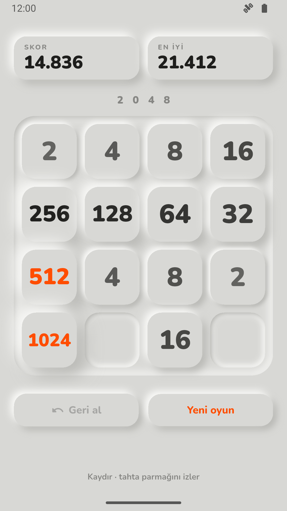
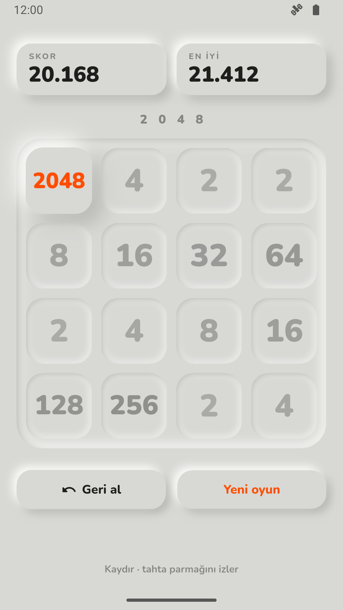
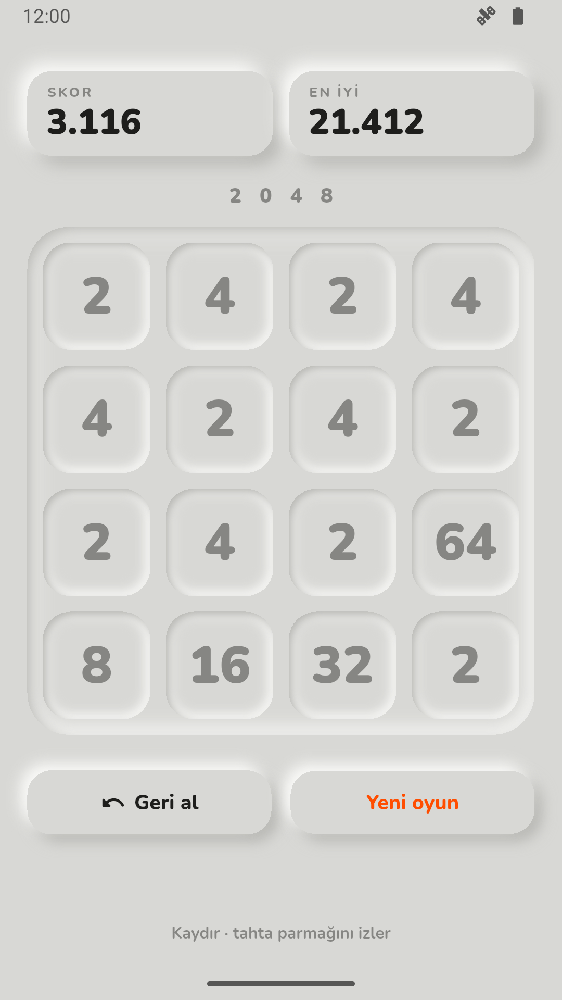

Klasik 2048 bulmacası, kil gibi kabarık karelerle. Kaydır, birleştir, son 20 hamleye kadar geri al. İnternet yok, izin yok, reklam yok. Altında hiç değiştirilmeyen bir oyun durumu var; geri al bu yüzden ayrı kod istemedi.
01 — Ne yaptım
Tahtayı kaydırıyorsun, aynı sayılar birleşiyor. Yanlış hamlede geri alıyorsun. 2048 olunca kazanan kare kabarıp turuncu oluyor, ötekiler sönüyor. Hamle kalmayınca kareler satır satır içe çöküp griye dönüyor. Uygulama kapanırsa oyun kaldığı yerden açılıyor.



02 — Neyi bilerek yapmadım
Bu uygulamanın göstereceği şey oyunun kendisi değil, durumun nasıl tutulduğuydu. Her ek ekran bunu gölgede bırakırdı.
03 — Bu hafta gösterdiğim teknik yetenek
Seride state yönetimi ilk kez ana yetenek. Kurallar Flutter'a dokunmayan saf
Dart: kaydır, birleştir, yeni kare, oyun sonu. Ekran yalnız bir Riverpod
Notifier'ını okuyor. Riverpod durumu ekrandan ayrı tutuyor; böylece oyun
hiç ekran kurmadan test ediliyor. Rastgelelik de dışarıdan veriliyor: sabit
tohumla "rastgele" yeni kare her seferinde aynı yere düşüyor.
Her kare, düğme ve çukur tek bir çizicinin işi. Tek girdisi bir yükseklik: artı kabarık, sıfır düz, eksi içe basık. Yeni kare çukurundan kabarıyor, birleşen kare önce basılıp daha kabarık çıkıyor, oyun sonunda hepsi içe çöküyor. Hepsi bu tek sayının animasyonu.
04 — Aldığım karar
Geri alın klasik yolu her hamlenin tersini hesaplamak: hangi kare nereden geldi, hangisi birleşti, skor ne kadar düşecek. Her kuralın bir de tersini yazmak, hata için iki kat yer demek.
Asıl soru: durum hiç değişmezse ne olur?
Her hamle eski durumu bozmadan yenisini üretiyor. O zaman geçmiş, eski durumların listesi; geri al da sondakini geri koymak. Test bunu doğrudan sınıyor: geri alınan durum, hamleden önceki durumla aynı nesne. Bedeli bellek: 20 tahta tutuluyor, her biri 16 sayı. Yarım oyun kaydı da aynı fikirden çıktı: tek bir durumu diske yazmak yetti.
05 — Nasıl doğruladım
Birim testleri kuralları (23) ve kaydetmeyi sınıyor; buna uygulamayı çökertmek yerine yeni oyun açması gereken 17 tür bozuk kayıt dahil (21). Notifier testleri geri alı, 20 hamle sınırını ve en iyi skoru (15), widget testleri tahtanın gerçekten eğildiğini ve geri alınca grileştiğini (8) ölçüyor. Cihazda bir entegrasyon testi gerçek kaydırmalarla oynuyor ve uygulamayı kapatıp açıyor.
06 — Ne öğrendim
İlk sürüm gerçek telefonda takılıyordu. Sebebi kabarık görünümün iç gölgesiydi: delikli bir şekli bulanıklaştırarak çiziyordum, bu her seferinde karenin 9 katı alanı bulanıklaştırmak demekti. Aynı görüntüyü üç yuvarlak dikdörtgen bulanıklığıyla çizince ekran kartı hızlı yoldan çizdi ve takılma bitti.
İncele